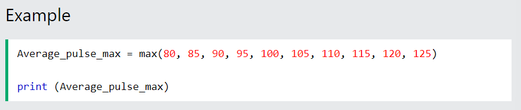
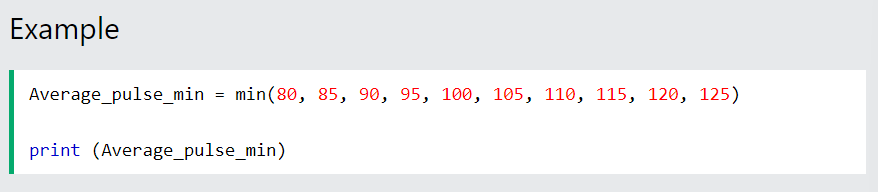
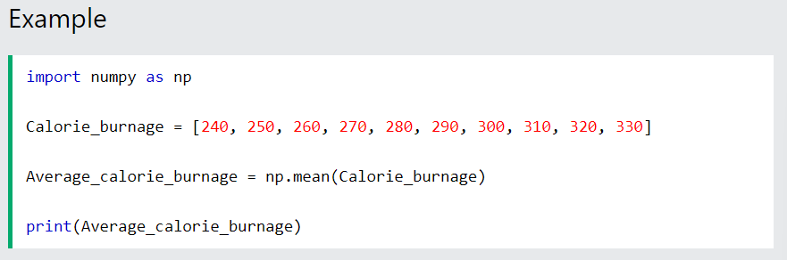

This chapter shows three commonly used functions when working with Data Science: max(), min(), and mean().
The data set above consists of 6 variables, each with 10 observations:
Duration - How long lasted the training session in minutes?
Average_Pulse - What was the average pulse of the training session? This is measured by beats per minute
Max_Pulse - What was the max pulse of the training session?
Calorie_Burnage - How much calories were burnt on the training session?
Hours_Work - How many hours did we work at our job before the training session?
Hours_Sleep - How much did we sleep the night before the training session?
We use underscore (_) to separate strings because Python cannot read space as separator.
The Python max() function is used to find the highest value in an array.
The Python min() function is used to find the lowest value in an array.
The NumPy mean() function is used to find the average value of an array.
Note: We write np. in front of mean to let Python know that we want to activate the mean function from the Numpy library.